202611 台中活動 - 探員日常
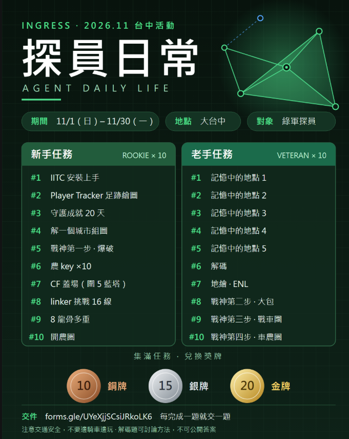
活動
活動概要
- 主題：探員日常
- 期間：11/1（日）00:00 – 11/30（一）23:59
- 地點：大台中
- 對象：大台中綠軍玩家
- 目標：完成最多 20 個任務
- 獎勵與排名：
集滿 10 個，兌換銅牌
集滿 15 個，兌換銀牌
集滿 20 個，兌換金牌
(以下是示意圖，僅供參考)
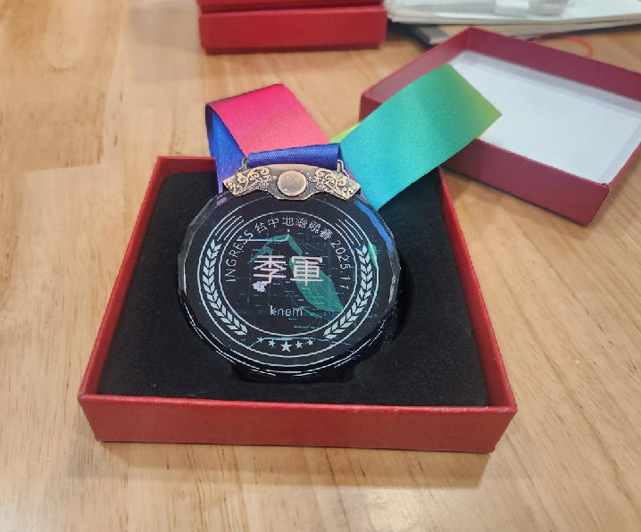
規則
- 注意交通安全，不要邊騎車邊玩
- 解碼題可以討論方法，但不可以直接公開答案
- 各題的驗證方式以主辦的判定為準
交件方式
- https://forms.gle/UYeXjjSCsiJRkoLK6
- 每完成一題就交一題，寫上「探員名稱＋題號＋截圖或答案」
- 截圖盡量能辨識參與者的存在
- 以主辦收到的時間為準
故事的起源
小明是剛升上 8 等的綠軍小萌新。
某天在公園，一位陌生人朝他走來，亮出手機上熟悉的遊戲畫面。
陌生人：「你也玩 Ingress 吧？我也是！我叫小黑。」
小明：「你好！」
小黑：「我玩一陣子了。這遊戲有個社群，大家會在裡面交流情報，要不要一起加入？」
小明：「好啊！」
（從那天起，小明正式成為陰詭絲邪教的一員。）
小明：「前輩，為什麼隔壁的藍軍 ET 一直來打我！？」
小黑：「放寬心，這遊戲本來就是兩個陣營打來打去。打掉對方的塔、或把自己的塔蓋回來，都能賺經驗值！」
小黑：「其實上了 8 等才是真正的開始，所有功能這時才全部解鎖。」
小黑：「慢慢摸索各種道具的用法，進攻和防守都有學問。」
小黑：「等你熟悉各種活動，也會成為像我一樣的老手！」
小黑：「想當年，我還是小萌新的時候……」
新手任務
新手#1 IITC - app
緣起
老探員之間流傳一句話：「只看掃描器的是新人，會看 IITC 的是老手。」
掃描器只照得到腳邊幾百公尺，IITC 卻能把整座城市攤在眼前。哪裡被藍軍染色、哪座塔剛被打白、誰的線正從遠方拉過來，全都看得一清二楚。
據說每個老手第一次打開 IITC 的那天晚上，都滑著地圖捨不得睡...
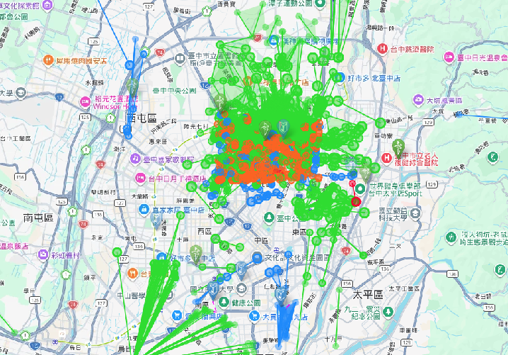
安裝 IITC（手機 app 或瀏覽器外掛），截一張 IITC 呈現的地圖畫面
提示
Ex: 安卓手機 app - IITC-CE行動版
https://play.google.com/store/apps/details?id=org.exarhteam.iitc_mobile
Ex: 蘋果手機 app - IITC-CE行動版
https://apps.apple.com/us/app/iitc-mobile/id1032695947
Ex: Chrome 瀏覽器的擴充功能 - IITC button
https://chromewebstore.google.com/detail/iitc-button/febaefghpimpenpigafpolgljcfkeakn?hl=zh-tw
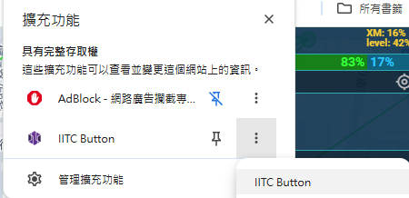
新手#2 IITC - player tracker
緣起
小明：「甚麼叫做不出 log？這是甚麼意思？」
小黑：「遊戲裡玩家的行動有些會跳戰報，戰情會透過追蹤玩家戰報動向來猜測他的行為」
小黑：「遊戲里大多數跟 portal 互動的行為會跳戰報：插腳、噴線、炸腳、點培根」
小黑：「例如你在機場出了 log，接著在高速公路附近又出 log，這兩條線的方向，告訴了大家你剛回國了」
IITC 裡藏著一隻上帝之眼，叫做 Player Tracker。
探員在 COMM 上留下的每個戰報，都會被它依時間串成一條足跡顯示在地圖上。
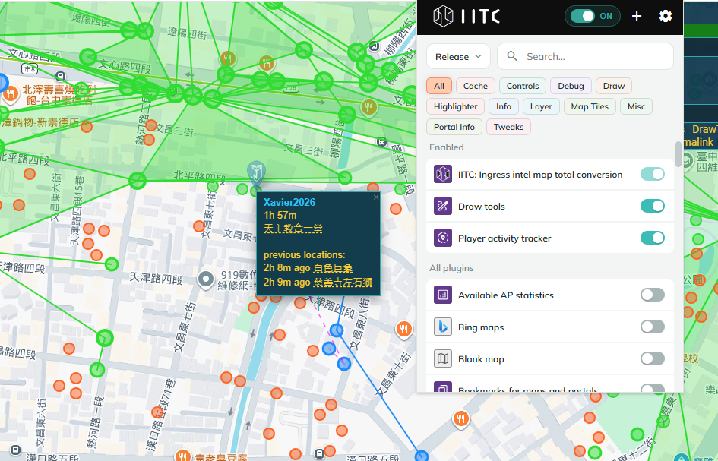
用你的足跡畫出指定圖
- 指定圖：繞著公園(一個小區域也行)一圈，沿路出 log，然後截 IITC 的圖
提示
- IITC 要啟用 Player Tracker 外掛，地圖上才會顯示足跡
新手#3 守護成就
緣起
在遊戲玩家間，流傳的一個古老的傳說。曾經只要佔領一座塔，守護他直到 20 天，就能達成金牌守護成就
漫畫聖哥傳連載的第八十話中以 portal 守護為主題，來描述 ingress 遊戲的日常
https://comic.acgn.cc/view-215393.htm
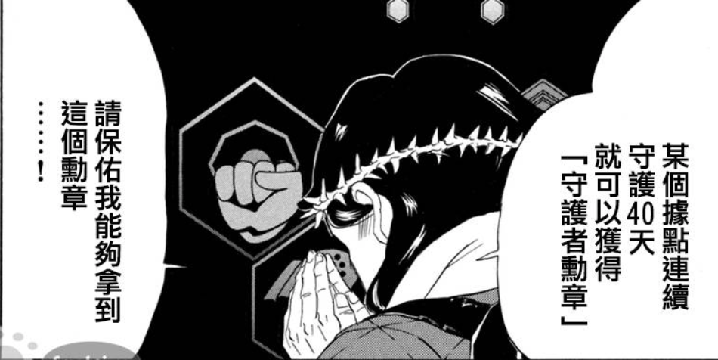
ingress 遊戲在 2018 年之前，還有一張成就牌，就是計算守護成就的時間
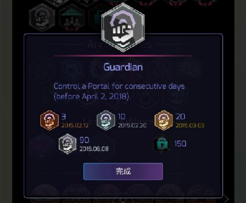
努力守護你的塔吧! 藏塔藏起來! 不要被藍軍找到!
請截圖月數據中...最長持有塔的天數。20天以上即完成任務
提示
- owner 是你自己才算持有時間
- 數據看月，大於等於 20 即可
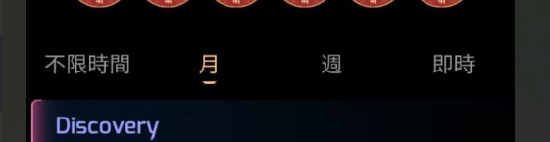
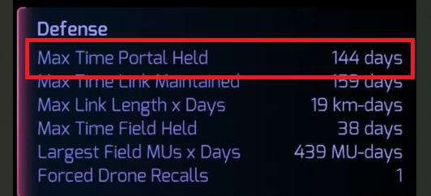
新手#4 解一個城市組圖
緣起
「這遊戲除了 key 可以收集之外，還有一種值得收藏的東西 - 就是組圖了!」
所謂的組圖，是由一排排 6 的倍數遊戲任務所組成系列圖
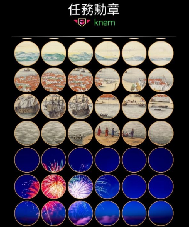
這遊戲組圖大多由玩家自行製作，大多會選區域地標照片為主題。
要解出一張漂亮完整的組圖，需要按照順序一個一個來解，在解任務的過程中，本身就是深度旅行的一種形式。例如著名的國聖燈塔組圖，就是從台南火車站，一路往七股國聖燈塔的旅程
完成任意一組組圖任務 (6張任務)。截圖遊戲組圖畫面
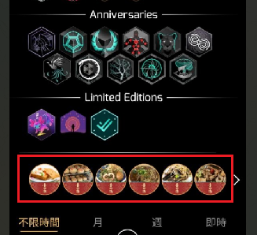
提示
- 挑選起點離你近、路線短的組圖，比較容易一次解完
新手#5 戰神第一步 - 爆破
緣起
這是一個陣營對戰的遊戲，玩家的日常就是雙方互相爆破。
隨著防禦模組的使用，塔有軟有硬。而重盾防守搭配充電補血更是防守的標準流程。
在區域聯防模式下，拚死命的充電，沒有三兩三，一般的玩家只能看著殘餘打不掉的一兩根腳而流下探員淚
傳說中... 只有戰神玩家才懂得如何輕易地拿下重盾防守的塔
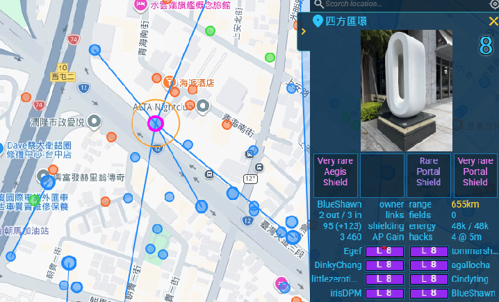
戰神第一步，就是爆破一座高難度塔。
截圖爆破前塔 (portal) 的模組狀態，以及打白後的狀態
高難度塔：純盾模組的防禦值加總150，並且有三條以上的連線
如範例圖片，純盾防禦值為 70+40+60 = 170
提示
- 舉例1：模組有四顆紫盾，理論防禦為 40*4 = 160，此時塔防禦為 95%
- 舉例2：模組有四顆綠盾，理論防禦為 30*4 = 120，此時塔防禦為 95%
-
塔防禦上限為 95% (超過就以 95%來計算)，概念就是傷害 100 的泡，打下去只扣 5 滴血
-
PS: 塔的防禦計算公式 = 盾的防禦 + 連線防禦。上限為 95%
- 連線防禦計算公式： (上限 70，金粽子可以加乘2倍以上的連線防禦)
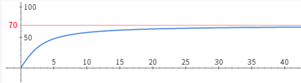
新手#6 農 key
緣起
「連線才是體現玩家技術的核心，沒有 key 就沒有連線」
這是前輩教我的第一句話。入坑第一週，我的背包裡永遠缺 key，看著別人輕鬆拉線，自己只能站在塔下一次又一次地 Hack。後來才知道，農 key 也是有門道的。
任意一座塔，農到 10 把 key。截物品欄 Key 頁面（看得到塔名和 ×10）
截圖農塔前的 key 數量，農完之後的 key 數量
提示
- 每座塔 4 小時內最多 Hack 4 次，每次冷卻 5 分鐘
- 裝散熱可以縮短冷卻並重置過熱，裝蝴蝶可以增加 Hack 次數
- 重複 Hack 只能拿到一把 key，先把 key 收進膠囊則可以再摸到新的一把
- 長按 Hack，Glyph 介面中輸入「More key」，可以一次拿到 1~3 把 key。
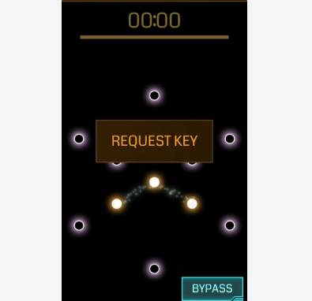
- 老手玩家會搭配點薯條物資加倍的方式，一次拿到雙倍的 key。
新手#7 CF 蓋場
緣起
老師上課在講，三條線能圍成一個三角形
而在 ingress 遊戲中，三條線能圍出一片天空，也就是一個 CF。
遊戲動畫故事中提到...只要區域被 CF 籠罩，範圍中的人們就會持續被洗腦，意志潛移默化，最後改變崇拜的對象。
建立一個 CF，範圍內包圍 5 座以上的藍塔
(示意範例如下)
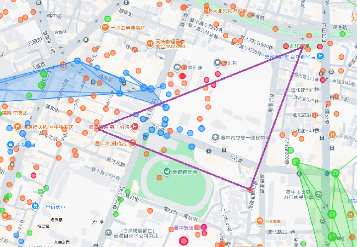
提示
- 先在 IITC 上規劃三個頂點，確認連線路徑不會被藍線擋住
新手#8 linker 挑戰
緣起
玩家的馬桶 (常用塔) 每天都能產出大量的 key，所以常常成為區域內的關鍵點。
傳說中，真正的 linker 會把自家馬桶變成一座燈塔：十幾條線從它身上射向四面八方，打開 Intel Map 遠遠就能看見。
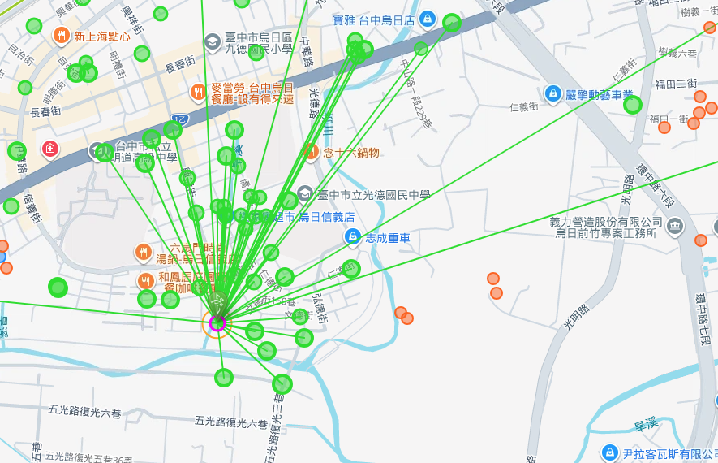
對一座塔建立 16 條連線，完成後截圖
提示
- 每座塔只能對外噴 8 條線，想要噴更多就只能上金粽子 (SoftBank Ultra Link)，每一顆 +8 條上限
- 對內的線則無上限
例如 2016.03.05 台北綠軍發起的和平鴿針包活動
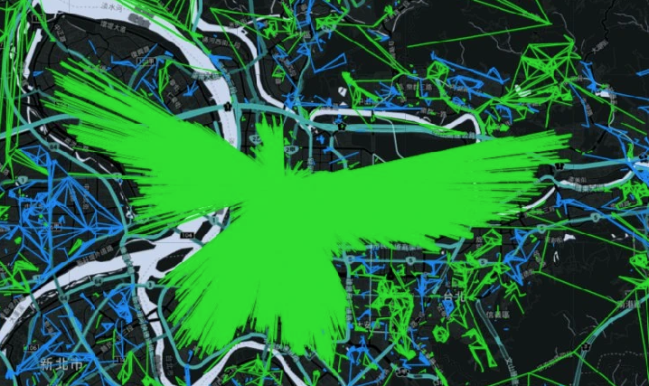
新手#9 多重
緣起
「刷經驗最快的方法就是拉 CF，而多重則是一種噴一條線產出兩個 CF 的技巧」
老探員刷 AP 從來不靠蠻力。他們會在地圖上排出一整串龍骨，每一條線噴出去，收穫兩個 CF。
多重分成 A 式和 B 式兩種流派，練熟之後，升級快得讓人懷疑人生。
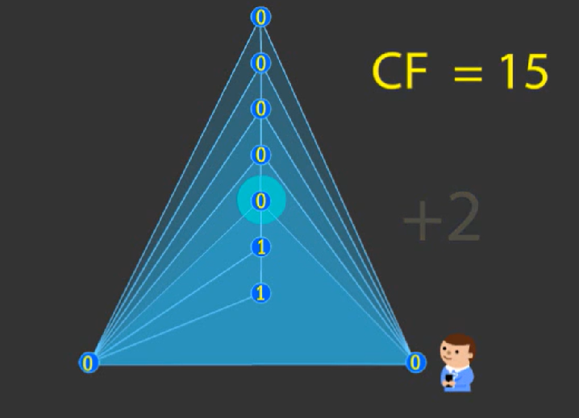
遊戲到了 16 等，玩家可以選擇重生，也就是從 1 級重新開始
7 等以下的遊戲體驗很糟糕，可以善用刷多重的方式，讓等級快速回到 8 等以上
前陣子神父重生，就使用刷多重技巧，花了四個小時就重新回到 16 等
建立一組 8 座龍骨的多重，截完成後的圖
提示
- 訣竅 1: A 式多重。https://www.youtube.com/watch?v=fwmd_s0lstg
- 訣竅 2: B 式多重。https://www.youtube.com/watch?v=TQjT8NocLtc
新手#10 開農團
緣起
「一座塔，Hack 幾次就過熱了，只能四小時才能重新摸。但只要裝上一套風扇加蝴蝶，它就會變成一口挖不完的井。」
風扇：減少 CD 時間
蝴蝶：增加可 hack 次數上限
老手們會找一個圈五以上、七等 R農的區域，一群人在塔間畫圖摸物資。這就是農團，探員們最快大量取得物資的方法。
「農團，對很多玩家來說，不僅僅只是取得物資，同時也是聊天交流的聚會時間」
開一場農團，截一張完成此任務的截圖
提示
- 圈五以上 (圈：黃色圈圈就是摸得到的範圍，此時範圍內數量至少要 5 座)
- 七等塔以上
- 農莊為一套 R or VR 農 (一套 = 風扇 + 蝴蝶)(R 指的是紫色等級)
Ex: 圈十
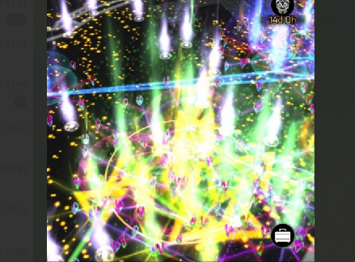
老手任務
老手#1 記憶中的地點1
緣起
「還記得... 很久很久之前的世界碎片戰.......」
活動前幾天，官方搶先公布了幾十張神秘照片，宣布說這些地點即將成為活動的碎片出生點
其中一張照片，那是三個ㄇ字椅子上面有一個小胖男孩
廣大的玩家們開始在全世界的範圍海搜 portal 照片，試圖找出記憶中熟悉又陌生的地點
很幸運的，台灣也有一個碎片出生點
「台南安平的 ㄇㄇㄇ 椅子」
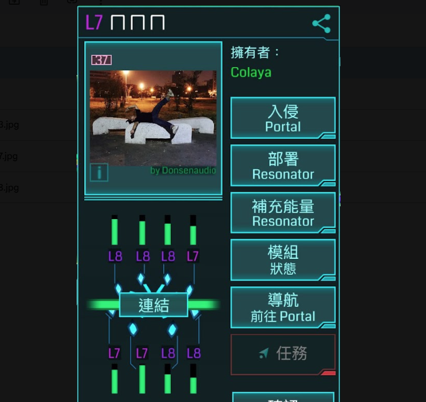
身為一個優秀的探員，必要條件是熟悉當地，包含：知名景點、地標、古蹟
主辦這次準備了五個神秘地點，來讓參賽者尋找他們的位置
每個任務我會給出一張照片，再請參賽者找出目的地，並且與照片中的畫面合照
「想要我的財寶嗎？想要的話可以全部給你，去找吧！我把所有的財寶都藏在那裡了」(???)
跟這個畫面合照
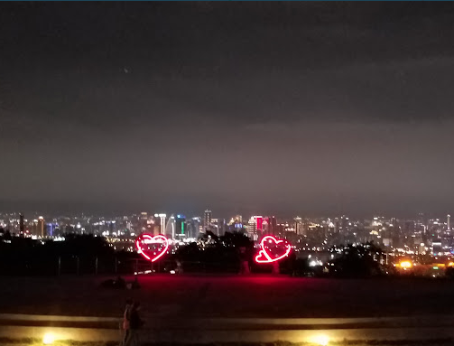
提示
- 可以用 IITC 或 Intel Map 比對 portal 照片，找出拍攝地點
老手#2 記憶中的地點2
緣起
同 老手#1
跟這個畫面合照
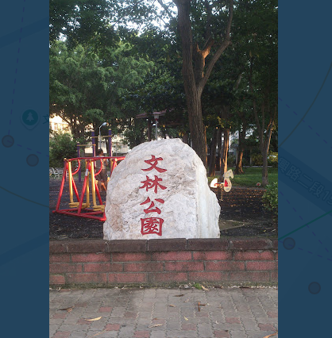
提示
同 老手#1
老手#3 記憶中的地點3
緣起
同 老手#1
跟這個畫面合照
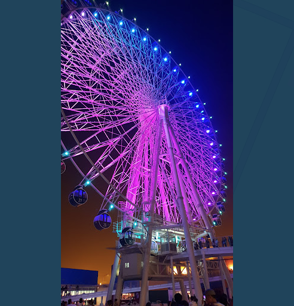
提示
同 老手#1
老手#4 記憶中的地點4
緣起
同 老手#1
跟這個畫面合照
提示
同 老手#1
老手#5 記憶中的地點5
緣起
同 老手#1
跟這個畫面合照 (展覽布幕可能會換)
提示
同 老手#1
老手#6 解碼
緣起
Niantic 偶爾會把 Passcode 藏在影片、圖片或一串亂碼裡，只有解得開的人才領得到獎勵。
例如... 這是先前的範例：
題目給出 a@&^seutats@gub$ 來讓玩家解密
詳解：
https://share.gemini.google/6xyh9A3uqdGw
這一次，主辦也藏了一組密碼，等你來解。
將以下的密碼，還原成明碼字串
MjAyNjExRW5sVGFpY2h1bmdBY3Rpdml0eQ==
提示
- 可以參考上方範例詳解的解題思路
老手#7 地繪
緣起
「Field Art 是探員寫在地圖上的字。」
有些探員連線不為 AP，也不為 CF，只為了讓整座城市在 Intel Map 上看見一個圖案。世界各地的探員都曾用線畫出巨大的標誌和文字，這次輪到你在台中留下簽名。
例如之前幫玩家慶生辦的地繪活動
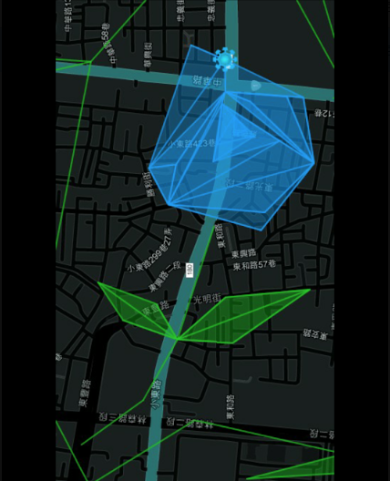
2016.02.06 台南震災，維冠大樓倒下
災情發生後，當時在地民眾踴躍前往協助救援行動。據我所知藍綠軍都有不少玩家前往協助
災情過了一個月，由玩家大寶發起了台南祈福紙鶴共繪活動來紀念緬懷這次災情
官方也許是看到了這活動，過了不久，就把台南選為大戰地點，並且在 2026.05.28 這天舉行活動
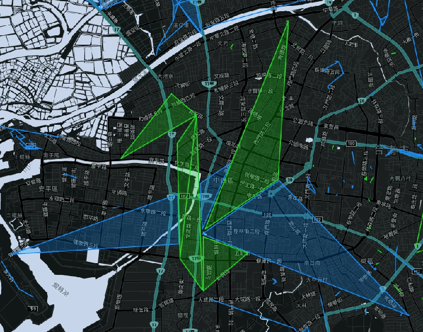
用 link 繪製 ENL 的字樣，截完整圖形的畫面 (IITC / 遊戲畫面皆可)
提示
- IITC 有 draw tool 工具可以在地圖上畫圖。也能匯出、匯入來跟友軍交流
老手#8 戰神第二步 - 大包
緣起
「MU 成就牌。這是一個不好完成，但同時也是能最快完成的成就牌。」
玩家成就牌中，其中有一項就是 MU 數，銀牌需要 100W，黑牌需要 400W。
不好完成的原因是，平常一個 CF 大概都只有幾 MU 數而已，想要累積到拿到成就牌的數量，天曉得要刷多少數量。
但幸好，隨著 CF 越來越大，MU 數量也會跟著增加。所以理論上... 建立一個足夠大的 CF，就能一次拿到 400W 以上的 MU。
所以這也是能最快完成的原因了，對資深玩家而言，輕輕鬆鬆
一直以來，玩家們心中有個疑問就是... 遊戲中最大的 CF，能夠有多大!?
因此一直以來都有玩家試著建立出一個超級超級大的 CF
這是一個由綠軍在 2017 發起的國際大包行動
行動前
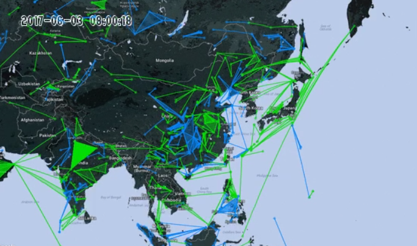
行動後
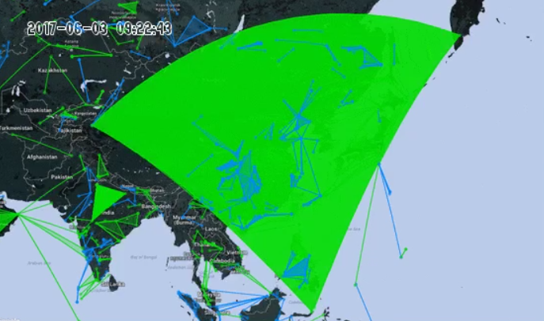
完成一個大型 CF (MU > 10000)，參與活動的所有玩家都能送件
截圖 log 跳出的 MU 數量 (遊戲log or IITC log 都可)
提示
- 怎麼估計 CF 的 MU 量? 可以先包一個小範圍的 CF 大約 100 MU。接著放大這個範圍 100 倍就行了
- MU 計算方式基本上看區域的人口數量，城市多、山區少
- 過程中往往會需要打掉擋線，藍線打掉藍塔即可。綠塔則是要毒藍斷線，要毒掉之前記得遊戲陣營頻友善告知塔主唷!
老手#9 戰神第三步 - 戰車團
緣起
A:「颱風天玩家好無聊喔，只能待在家裡」
B:「颱風天還能幹嘛? 當然在家裡早點洗洗睡阿!....」
B:「咳... 颱風天當然要開戰車團出去玩阿! 開綠八農團，接著到處蓋武裝八塔」
外面大風呼呼的吹，小黑回憶起當年在台南的往事......
也是一樣的颱風天，夜黑風高，在崑山的宿舍中，我吃著火鍋唱著歌......
小黑 OS: 「太好了! 看來今日又是和平的一天」
突然... 手機一陣晃動，來電顯示是東聲，line 裡 peter 哥、ck 哥也接連跳出通訊邀請
心裡一陣OS：「尼麻，這時候 call 準沒好事，我是要裝死? 裝死還是裝死!?」
最後嘆了一口氣接起電話
peter:「走啊! 上車!」
小黑: 「可是... 現在颱風天耶。而且待會崑山就要淹水了，我出不去啦! ^_<」
peter:「沒事! 我們整車人都在你家樓下等你了，水還沒淹上來 GO!」
小黑: 「...................................」
(最終 一車10個人，颱風夜在台南市區到處蛇來蛇去)
(風很大，車子一直抖，可是各位有份量的大佬讓車身硬是穩定下來)
(雨很冷，但是不知道為啥，有個妹子跟我擠在後車廂，心是暖的 ????????)
所以... 你問我颱風天探員的日常要幹嘛? 當然是上戰車 HAPPY 阿!
戰車司機這麼多，唯一推薦台灣爸，信賴可靠的台灣爸讓你早點回家，品質保證
三人一車，出團去!
自拍車內三人、IITC 截圖一起行動的路線 log
提示
- 路線 log 可以用 IITC 的 Player Tracker 查看（同新手#2）
老手#10 戰神第四步 - 車農團
緣起
農團，是陣營快速取得物資的方法，同時也是友軍們聚會聊天的活動
相反的，車農團就是避免對手陣營成功開完農團的反制舉動
傳統的車農團行動是一個高度困難的協同作戰：
- 戰情 - 待在電腦前，觀察地圖上的玩家動向、反覆檢查常見農團點是否冒出大量高等塔，發現後即刻在群組中通報
- 戰神 - 喵到群組通報藍七、藍八緊戒訊息，立馬放下手邊的工作，上車一路衝到通報地點。先嗑了一顆 LPC 之後就瘋狂連點八泡。
為了部落! 為了陣營! 每個戰神犧牲自己的時間，就只為了陣營更強大而努力!
誰會明白... 發砲車平敵方農團之後，才是長期抗戰的開始
經驗不足的年輕戰神，往往會被藍軍反覆蓋起的八塔榨乾了物資
想要走的更長遠，想要撐得更久
精確計算手上的物資量，在來回互耗的時間中... 成為藍軍的夢魘
這就是戰神之路
很久之前辦過的戰神榜競賽活動，統計一個月內玩家車農團的次數
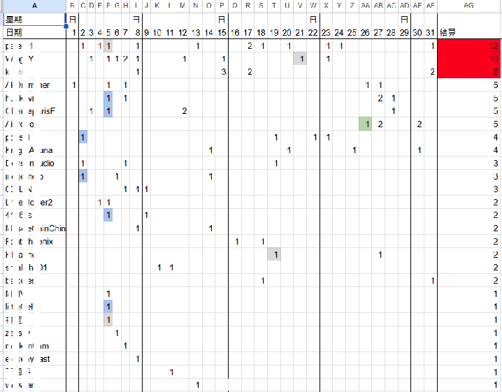
當時活動獎品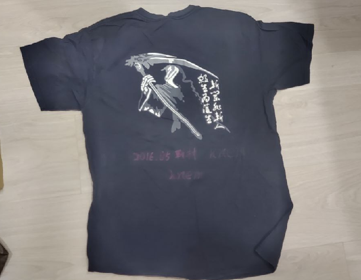
完成一次車農團行動
截圖行動前的農團畫面、接著截圖行動後的遊戲畫面
提示
- 圈五、七塔、R農以上的團，稱為農團
結語
遊戲的互動方式有很多種，
- 有的人喜歡成為戰神玩家
- 有的人喜歡當物資農夫
- 有的人喜歡澆水養草種菜
- 有的人喜歡區域防守
- 有的人著重在挖掘地方美食
- 有的人喜歡刷數據、拚各種遊戲成就
- 有的人喜歡參加大型戰役活動
遊戲最重要的是玩得開心，用自己喜歡的方式來玩遊戲就對了